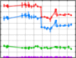

Time (Current, History),
Space (Current, History),
I/O (Current, History)
| tar | rev | real | sys | io | user |
|---|
| rm | rev | real | sys | io | user |
|---|
| postmark | rev | real | sys | io | user |
|---|
| andrew | rev | real | sys | io | user |
|---|
| imap | rev | real | sys | io | user |
|---|
| rev | bits | bytes | noops | all | deps | rollback | ||||||
|---|---|---|---|---|---|---|---|---|---|---|---|---|
| items | kB | items | kB | items | kB | items | kB | items | kB | kB | ||
| tar | rev | writes | reads | multi-write sectors | |||
|---|---|---|---|---|---|---|---|
| requests | kBs | requests | kBs | sectors | sector writes | ||
| rm | rev | writes | reads | multi-write sectors | |||
|---|---|---|---|---|---|---|---|
| requests | kBs | requests | kBs | sectors | sector writes | ||
| postmark | rev | writes | reads | multi-write sectors | |||
|---|---|---|---|---|---|---|---|
| requests | kBs | requests | kBs | sectors | sector writes | ||
| andrew | rev | writes | reads | multi-write sectors | |||
|---|---|---|---|---|---|---|---|
| requests | kBs | requests | kBs | sectors | sector writes | ||
| imap | rev | writes | reads | multi-write sectors | |||
|---|---|---|---|---|---|---|---|
| requests | kBs | requests | kBs | sectors | sector writes | ||